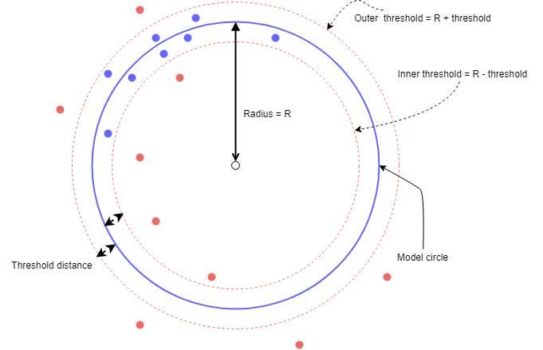

blah 1blah 1blah 1blah 1blah 1blah 1blah 1blah 1blah 1 blah2blah2blah2blah2blah2blah2blah2blah2blah2blah2blah2 blah2blah2blah2blah2blah2blah2blah2blah2blah2blah2blah2 blah3blah2blah2blah2blah2blah2blah2blah2blah2blah2blah3

blah 100blah 1blah 1blah 1blah 1blah 1blah 1blah 1blah 1 blah2blah2blah2blah2blah2blah2blah2blah2blah2blah2blah2 blah2blah2blah2blah2blah2blah2blah2blah2blah2blah2blah2 blah300blah2blah2blah2blah2blah2blah2blah2blah2blah2blah3
blah 300blah 1blah 1blah 1blah 1blah 1blah 1blah 1blah 1 blah2blah2blah2blah2blah2blah2blah2blah2blah2blah2blah2 blah2blah2blah2blah2blah2blah2blah2blah2blah2blah2blah2 blah300blah2blah2blah2blah2blah2blah2blah2blah2blah2blah3